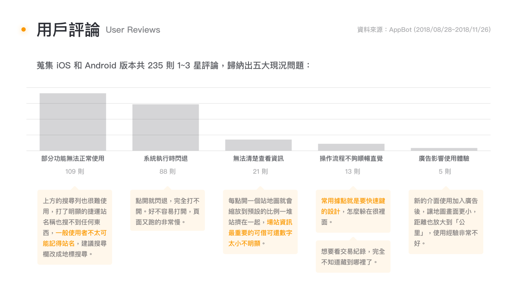
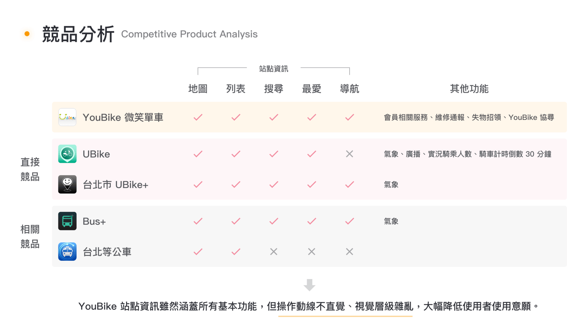
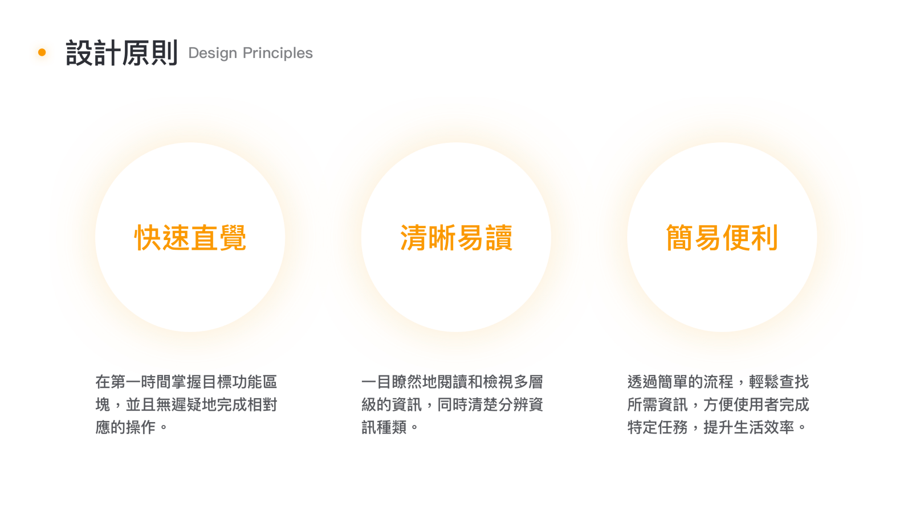

YouBike 作為輕量型共享單車，提供城市市民更加環保及便捷的交通選擇，兼具通勤、休閒、運動等多項用途，然而官方 App 的使用體驗欠佳、介面雜亂無序，使用者無法即時獲得所需資訊或順利完成特定任務，造成莫大的挫敗感。
聚焦於產品核心功能（查看站點狀態），並重新梳理資訊架構，將操作流程減至最低點擊次數，同時考量到技術可行性。透過明確的視覺層級讓使用者一眼就能獲取所需資訊，並除去不必要的裝飾性元素，保留畫面的呼吸感，延續線下的便利、友善體驗。
我們在針對頁面上的問題提出解決方案、繪製設計稿之前，試著先做了一些桌面研究，使用 AppBot 蒐集了近 90 天內、共 235 則的負面用戶評論，歸納出五大現況問題，同時從功能特性切入，進行簡單的競品分析，並共同訂定出三個應遵循的設計原則。
  俗話說：好的資訊架構是成功的一半，使用者要能夠有脈絡地知道「我現在在哪裡 、我可以到哪裡、我要怎麼到那裡」，我們依據三種不同的使用情境梳理出三個主要架構。